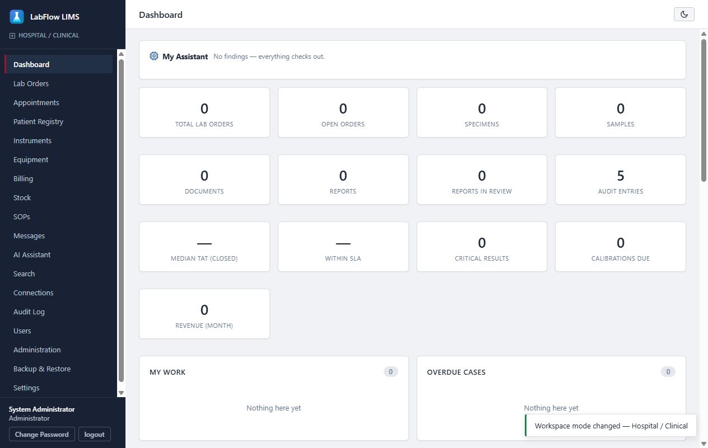
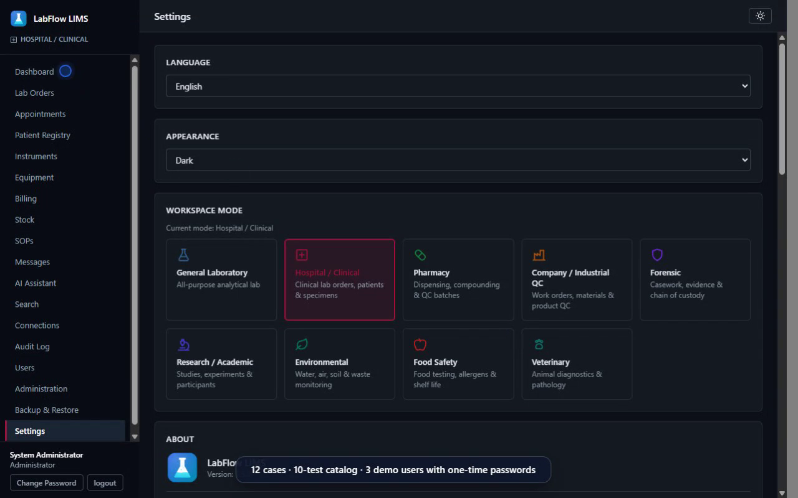
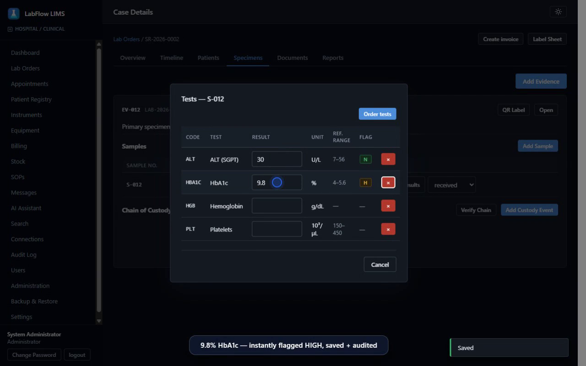
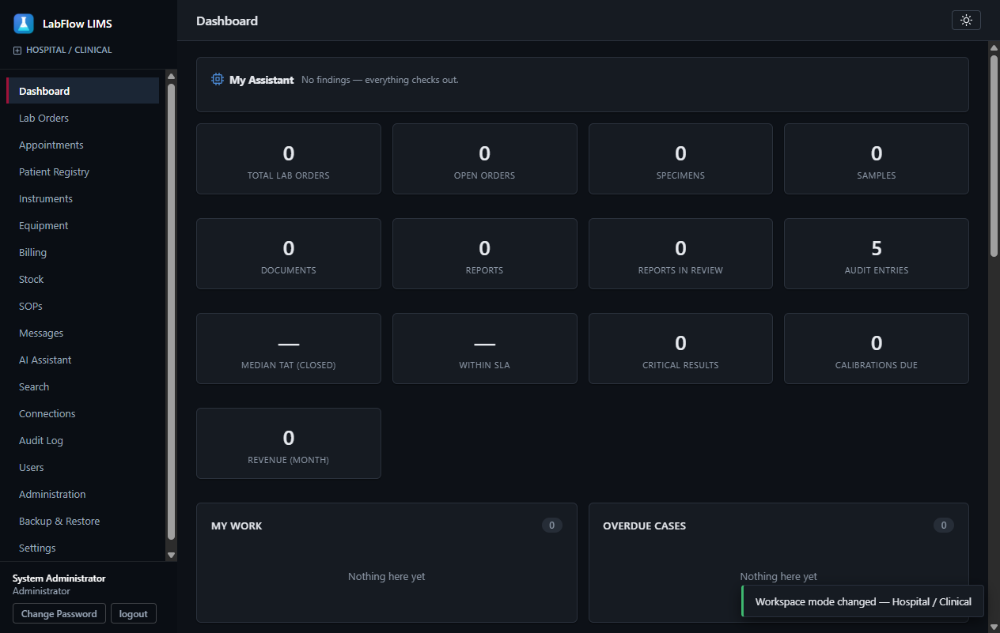
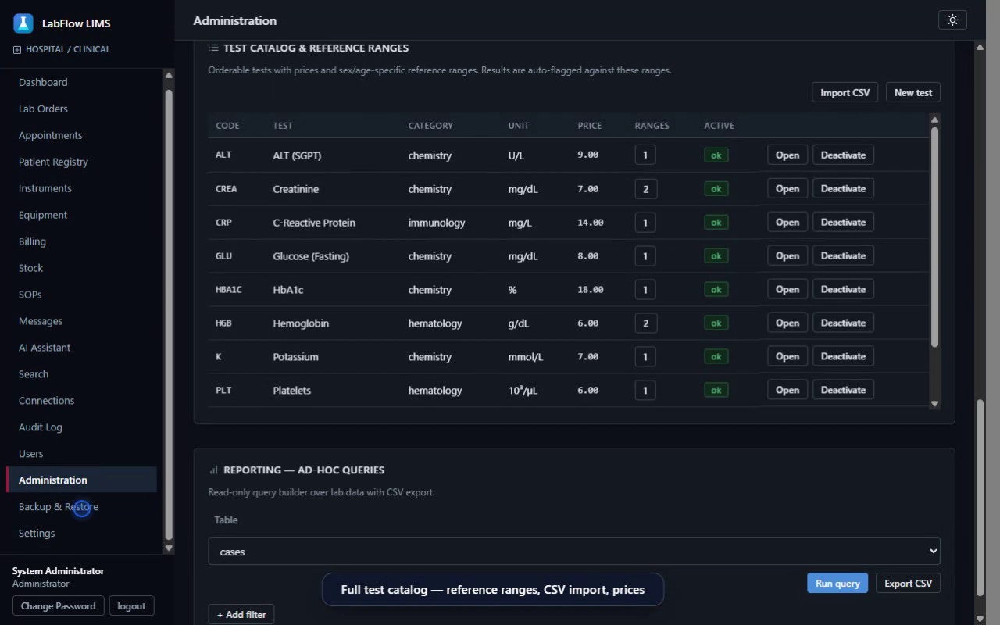
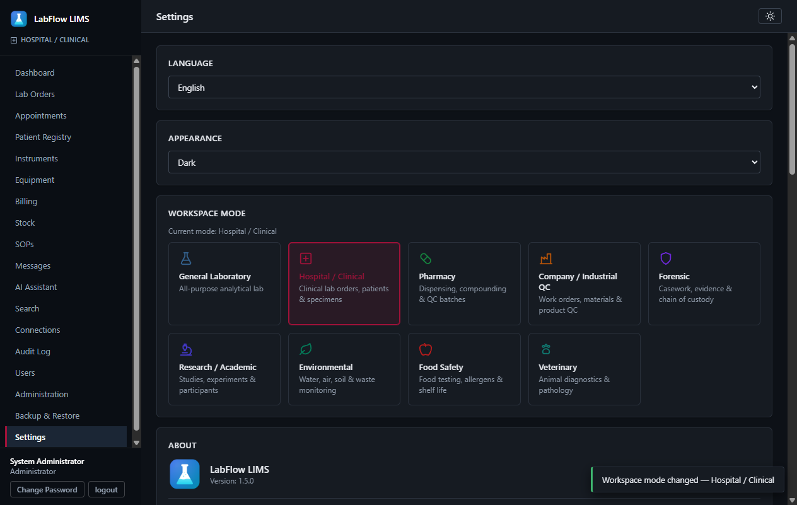

The laboratory system that never phones home
LabFlow is a complete LIMS for hospitals, clinics, pharmacies and nine industries. It runs entirely on your own computers — no cloud, no subscription servers, and no data ever leaving your building. English and Arabic, side by side.

One system, nine industries
Choose your field during setup. Terminology, sample numbering and workflows adapt to how your laboratory actually works.
From sample intake to signed report
One installer covers the complete workflow. Nothing on this list is a paid add-on.
Offline by design
Runs entirely on your PC — air-gapped networks, basements, field laboratories. The application blocks its own outbound network traffic as a matter of policy.
Critical-value flagging
Results are checked against reference ranges as you type. Out-of-range values are marked N, H or L immediately and appear on the critical-results board.
E-signed reports and CoA
Approve results with a cryptographic e-signature and export Certificates of Analysis as PDF. Every signature can be verified independently.
Tamper-evident audit trail
Every action is written to a hash-chained, HMAC-keyed audit log. If anyone edits history, verification fails and the record shows it.
Turnaround & SLA tracking
Set turnaround targets per test. Dashboards surface breaches before your clients call about them.
Multi-user over LAN
One PC acts as the server; colleagues connect across the local network. Role-based access for administrators, supervisors, analysts, QA and reception.
Equipment & inventory
Calibration schedules with due-date alerts, maintenance history, reagent stock levels and low-stock warnings — in the same system as your cases.
Billing included
Generate invoices directly from cases, track payment status and export revenue summaries without re-typing anything into a second application.
Dark & light · English & Arabic
A restrained dark theme for night shifts, a bright theme for daylight, and complete Arabic localisation with true right-to-left layout. Each user picks their own.
Ask your documents
Ask a question in plain language and get cited passages from inside your own SOPs and scanned documents — ranked search that runs entirely on your PC, in English and Arabic. Click a citation to open the source file.
A real case, end to end, in 100 seconds
Recorded from the actual application: patient intake, result entry, critical flags, an e-signed certificate, then the full Arabic interface.
Built like the enterprise software it replaces
Five screens, unretouched. What you see here is what installs.





The arithmetic favours owning
Cloud LIMS pricing commonly starts around $500 per month and never stops. Here is the comparison those vendors would rather you didn't make.
| Criterion | LabFlow LIMS | Cloud LIMS | Spreadsheets & paper |
|---|---|---|---|
| Pricing model | One payment per workstation | Monthly per-user fee, indefinitely | Free — until an error costs you |
| Where data lives | Your building, full stop | The vendor's servers | Scattered files and binders |
| Works without internet | Yes — designed for it | No; an outage stops the lab | Yes, with no controls |
| Audit trail | Hash-chained, tamper-evident | Varies by vendor and tier | None |
| E-signed reports | Included | Often a higher tier | Wet ink and scanning |
| Arabic with true RTL | Complete, per user | Rare | Manual formatting |
| Time to first case | Minutes after install | Weeks of onboarding | Immediate, then unmanageable |
| Cost of leaving | None — the data is already yours | Export requests and lock-in | Retyping history |
What would the cloud bill come to?
Figures are your own inputs — we make no claims about any specific vendor's pricing.
Security you can verify, not marketing
Every claim below is a mechanism, not a promise — and each one works with the network cable unplugged.
Hash-chained log
Every action appends to an HMAC-keyed hash chain. Rewriting history breaks the chain — visibly, permanently.
Ed25519 signatures
Licence keys are signed with Ed25519 and verified offline against your machine ID. There is no activation server to breach.
E-signed certificates
Certificates of Analysis carry a cryptographic signature that can be checked independently of the application.
Encrypted archives
One-click backups are encrypted before they reach whichever drive you point them at.
Outbound blocked
The application refuses its own outbound traffic. Air-gapped deployment is the default assumption, not an afterthought.
SBOM + checksums
Every release ships with a software bill of materials and SHA-256 checksums, so you can verify what you install.
“The safest place for laboratory data is the laboratory. LabFlow's entire architecture follows from that one sentence.”
Pay once. Own it.
Licences are locked to your machine and verified offline with cryptographic signatures. Activation takes about a minute and never touches the internet — because there is nothing to connect to.
Install and evaluate
Download the installer and use the full product free for 14 days. Every feature is unlocked during the trial.
Send your machine ID
The app shows a short device code such as QQQQ-WWWW-EEEE-RRRR. Send it to us with your organisation's name.
Paste your key
You receive a signed licence key for that machine — perpetual or yearly, your choice. It keeps working offline, indefinitely.
Own your LIMS — don't rent it
Cloud LIMS subscriptions commonly start around $500 per month, indefinitely, with your data on someone else's servers. LabFlow is a one-time purchase that lives on your hardware.
- Every feature unlocked
- All nine industry workspaces
- No credit card, no signup
- Your data carries over if you buy
- Pay once, use it indefinitely
- Licence key locked to your device
- All features, both languages
- Free updates for one year
- Priority email support
- Multiple workstations over LAN
- Deployment and training session
- Custom terminology and branding
- A direct line to the builder
Run your lab on LabFlow for 90 days — free
We are onboarding three real laboratories as founding pilots. You get the full product, setup help and a direct line to the builder for 90 days at no cost. In return, you run real samples through it and tell us the truth once a week. Founding labs keep a permanent price advantage if they buy.
Questions laboratories actually ask
9.1Does it really work with no internet at all?
9.2Where is my data stored?
9.3Can several people use it at once?
9.4What happens when my trial ends?
9.5What if I replace my computer?
9.6Is it really bilingual?
9.7How do updates work with no internet?
9.8Is LabFlow certified for ISO 17025?
Retire the spreadsheet. Keep the data.
One short request gets you the installer and a 14-day trial — no sales calls, no card.
Request your trial